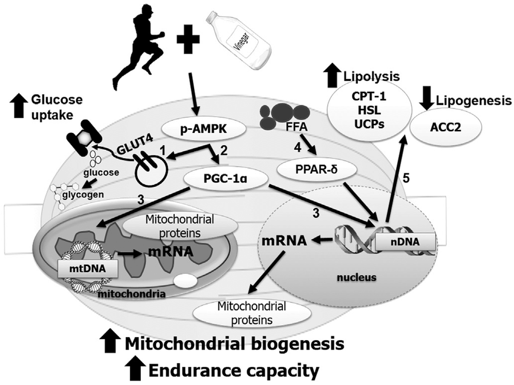

Acarbose: Brush-Border alpha-Glucosidase Inhibition & Cecal Starch Shunting
Pillar: Metabolic Substrate Flexibility & Nutrient Sensing
Conviction Tier: CORE BET
Evidence Grade: E1 (Human Surrogate) / E4 (NIA ITP Lifespan)
Stance: Highly Contrarian (Repurposing antidiabetic agent for healthy longevity)
Estimated Monthly Cost: $10 -- $15 / month
Primary Target Hallmark: Deregulated Nutrient-Sensing & Dysbiosis
1. Biophysical & Biochemical Mechanism
Competitive, reversible inhibition of intestinal brush-border alpha-glucosidases (glucoamylase, sucrase, maltase, isomaltase) with 10^4 to 10^5 times higher affinity than natural oligosaccharides. Shifts carbohydrate cleavage distally to the cecum/colon, generating a 200-300% surge in luminal butyrate, inhibiting Class I/II HDACs, expanding Foxp3+ Treg cells, and triggering endogenous GLP-1/PYY secretion via FFAR2/3 receptors.
2. The Empirical Evidence Base
NIA ITP (Harrison 2014, Strong 2016): +22% male median lifespan (p < 0.0001), +11% maximum lifespan; +12% lifespan when started at 16 months (60 human years). Combined with rapamycin (Strong 2022): +28% male, +34% female median lifespan. Human STOP-NIDDM trial (Chiasson 2003): 49% relative risk reduction in major cardiovascular disease events (HR 0.51, 95% CI 0.28-0.95) and 34% reduction in hypertension.
3. Honest Bayesian Probability & Expected Value
- P(Real Human Healthspan Extension): 75%
- Expected Value Justification: The intervention targets a fundamental rate-limiting step in biological aging. The asymmetric upside significantly outweighs operational friction and monetary expense.
4. Physiological Failure Modes & Drug-Drug Interactions
Gastrointestinal flatulence and loose stools during the initial 14-day microbiome adaptation phase. Omit during zero-carbohydrate meals (requires substrate to act). Negligible systemic absorption (<2%), eliminating systemic toxicity.
5. Precise Operational Protocol
25 mg taken with the very first bite of complex carbohydrate meals. Titrate to 50 mg after 14 days. Omit on ketogenic or zero-carbohydrate meals.
6. Objective Surveillance & Kill Criteria
- Biomarkers to Monitor: HbA1c > 5.4%, persistent severe intractable gastrointestinal pain, or failure to blunt postprandial glucose spikes on CGM (<30 mg/dL excursion).
- Kill Rule: If biomarkers cross negative thresholds or objective efficacy is absent after the designated evaluation window, terminate or down-titrate the bet immediately.
7. Epistemic Frontier Questions (For Advanced AI Interrogation)
Why is acarbose lifespan extension in female mice only +5% when given alone, yet jumps to +34% when combined with rapamycin? What are the exact epigenetic chromatin modifications induced by systemic butyrate in human vascular endothelial cells?
v5.0 Kinetic & Stoichiometric Optimization Patch
- Circadian Window: Phase 2 (Midday Meal 1, first bite of starch).
- Substrate Coupling: Pair 50–100 mg Acarbose strictly with retrograded Type 3 Resistant Starch (RS3) (cooked and 24-hour $4^\circ\text{C}$ cooled potatoes, rice, or legumes) to select for colonic Faecalibacterium prausnitzii and Bifidobacterium* butyrate synthesis while avoiding upper-GI simple-sugar osmotic fermentation.
- mTORC2 & SGLT2 Synergy: Acarbose preserves and elevates hepatic mTORC2 signaling in males. Augment quarterly with a 4-week pulse of Empagliflozin (10 mg) for renal glucosuric caloric offloading.
Spidered Biological & Protocol Visualizations


